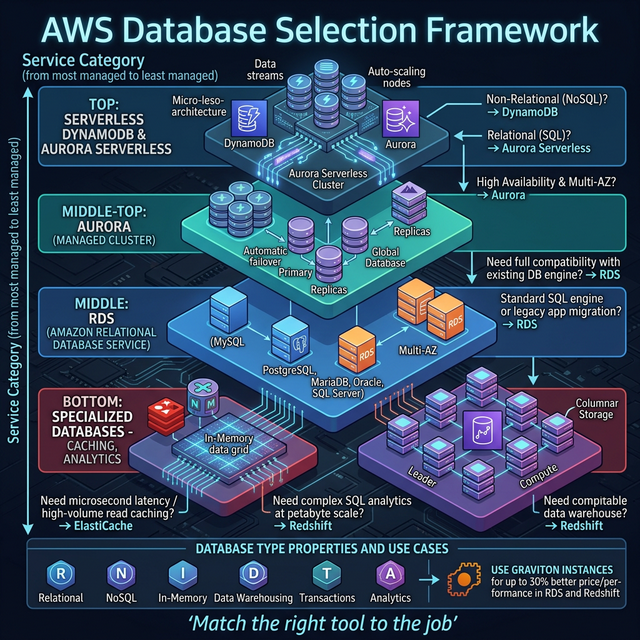

Databases
Database Interview Guide
Database selection, RDS vs Aurora vs DynamoDB, caching, and migration — asked in every SA interview.
5Topics
5Diagrams

Caching — ElastiCache & DAX

| Service | Engine | Latency | Best For |
|---|---|---|---|
| ElastiCache Redis | Redis (in-memory) | Sub-millisecond | Session store, leaderboards, pub/sub, complex data types |
| ElastiCache Memcached | Memcached (in-memory) | Sub-millisecond | Simple key-value caching, multi-threaded |
| DAX | DynamoDB-native cache | Microseconds | DynamoDB read-heavy workloads (drop-in, no code change) |
| CloudFront | CDN edge cache | Edge-level | Static assets, API responses at the edge |
Caching Strategies
| Strategy | How | Use When | Trade-off |
|---|---|---|---|
| Lazy Loading (Cache-Aside) | App checks cache → miss → read DB → write to cache | Most cases, default strategy | First read is always a miss (cold start) |
| Write-Through | Write to cache AND DB on every write | Data must always be in cache | Higher write latency, cache may hold unused data |
| Write-Behind | Write to cache → async write to DB later | High write throughput | Risk of data loss if cache crashes |
| TTL | Set expiration time on cached items | Always — prevents stale data | Must balance freshness vs hit rate |
🎯 Key Takeaway
Interview tip: "I use lazy loading with TTL as my default caching strategy — it handles cache misses gracefully and TTL prevents stale data. For DynamoDB reads, DAX gives microsecond latency with zero code changes. Redis is my choice over Memcached because it supports pub/sub, sorted sets, and persistence."
Database Migration (DMS & SCT)

| Tool | Purpose | Migration Type |
|---|---|---|
| DMS (Database Migration Service) | Migrate data between databases (including during operation) | Homogeneous (MySQL → MySQL) or Heterogeneous (Oracle → Aurora) |
| SCT (Schema Conversion Tool) | Convert schema + stored procedures between engines | Heterogeneous only (e.g., Oracle → PostgreSQL) |
DMS Migration Modes
- Full Load — One-time migration of all existing data
- CDC (Change Data Capture) — Continuous replication of changes after full load
- Full Load + CDC — Most common: migrate everything, then keep syncing until cutover
Migration Strategy
- Assessment: Run SCT to analyze schema compatibility and identify conversion issues
- Schema conversion: SCT converts schema, stored procedures, triggers
- Full load: DMS migrates all existing data to the target
- CDC replication: DMS continuously replicates changes while source is live
- Cutover: Stop writes to source → verify target → switch application connection string
🎯 Key Takeaway
Interview tip: "For database migration, I use DMS with Full Load + CDC for near-zero downtime. For heterogeneous (Oracle → Aurora), I run SCT first to convert the schema, then DMS for data migration. During CDC, the source stays live — we cut over only when the replication lag is zero."
Interview Questions — Databases
Database selection and design is a core architect competency. These questions test your ability to choose the right database and handle data at scale.
-
Your application has complex SQL queries with JOINs across 20 tables, needs ACID compliance, and handles 50,000 reads/second with 5,000 writes/second. Would you choose RDS PostgreSQL or Aurora PostgreSQL? Why?Answer GuideAurora — 5x throughput over standard PostgreSQL, 6 copies across 3 AZs, auto-scaling storage to 128TB, up to 15 read replicas. The storage architecture (shared distributed volume) eliminates replication lag for read replicas.
-
Design a DynamoDB table for an e-commerce application. You need to query by customer_id (all their orders), by order_id (single order lookup), and by date range (orders in last 30 days). What's your key design?Answer GuidePK = customer_id, SK = order_date#order_id (enables range queries). GSI1: PK = order_id (single lookup). Consider single-table design vs multiple tables. Discuss hot partition risk if one customer has millions of orders.
-
Your DynamoDB table has a hot partition problem — one partition key receives 80% of all traffic. What are three strategies to fix it?Answer Guide1) Write sharding — add random suffix to partition key (e.g., customer_123#1, customer_123#2). 2) Composite keys — add a time-based prefix. 3) Caching — DAX in front of DynamoDB for read-heavy patterns. Also: re-evaluate the data model itself.
-
When would you use ElastiCache Redis vs DynamoDB DAX? A team is adding caching to their application and isn't sure which to choose.Answer GuideDAX is specifically for DynamoDB — microsecond read latency, API-compatible (drop-in). ElastiCache Redis is general-purpose — supports complex data structures (sorted sets, pub/sub, Lua scripting), works with any backend. Use DAX for DynamoDB-only caching, Redis for everything else.
-
You need to migrate a 2TB Oracle database to Aurora PostgreSQL with near-zero downtime. Walk me through the complete migration process.Answer Guide1) SCT to convert schema. 2) Fix incompatibilities manually (Oracle-specific PL/SQL, sequences, synonyms). 3) DMS Full Load to seed data. 4) DMS CDC for ongoing replication. 5) Validate data consistency. 6) Cut over when replication lag = 0. Test rollback plan before cutover.
-
Explain the caching strategies: lazy loading, write-through, and write-behind. Which would you use for a leaderboard that updates every second and is read by millions of users?Answer GuideWrite-behind (write to cache immediately, async persist to DB) for real-time updates. Redis Sorted Sets are perfect for leaderboards (ZADD, ZRANGE). Lazy loading risks stale data. Write-through adds latency on every write. Discuss TTL as a safety net.
-
Design a multi-region database strategy for a global chat application. Users in US, Europe, and Asia need sub-100ms read and write latency from their region.Answer GuideDynamoDB Global Tables — active-active in all 3 regions with eventual consistency (typically sub-second replication). For SQL: Aurora Global Database gives low-latency reads in secondary regions, but writes go to one primary region. Trade-off: DynamoDB has eventual consistency, Aurora has single-writer.
-
A Lambda function connecting to an Aurora database is hitting connection limits during traffic spikes (1,000 concurrent Lambda executions). How do you solve this?Answer GuideRDS Proxy — connection pooling and multiplexing. Lambda creates a new connection per invocation; RDS Proxy pools them (e.g., 1,000 Lambda connections → 100 DB connections). Also supports IAM authentication and automatic failover. Without RDS Proxy, you'll exhaust max_connections.
-
Your team uses DynamoDB with On-Demand capacity mode. The monthly bill is $15,000. Reads are 80% of the cost and traffic is predictable. How would you optimize?Answer GuideSwitch to Provisioned capacity with auto-scaling (20-40% cheaper for predictable traffic). Add DAX for read-heavy patterns (reduces consumed RCUs dramatically). Enable DynamoDB Reserved Capacity for baseline. Consider DynamoDB Infrequent Access table class for cold data.
-
What's the difference between DynamoDB strongly consistent reads and eventually consistent reads? When would you explicitly need strong consistency?Answer GuideEventually consistent (default) — may return stale data (replication takes ~ms). Strongly consistent — always returns latest, but 2x the cost and only works against the leader node. Use strong consistency for: financial transactions, inventory counts, anything where reading stale data causes business errors.
Preparation Strategy
Database questions test your decision framework: SQL vs NoSQL, consistency vs availability, cost vs performance. For every answer, explain the trade-off: "I chose Aurora over DynamoDB because [requirement] outweighs [trade-off]." Interviewers want to see you think through options, not jump to a favorite.